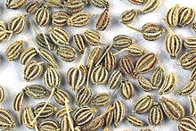
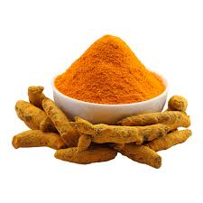
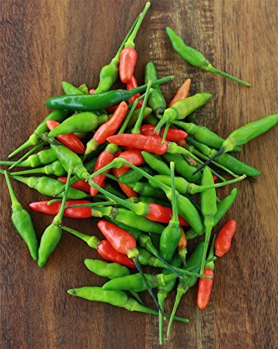
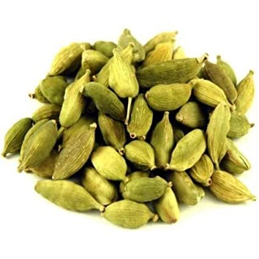
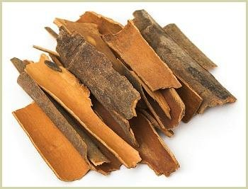
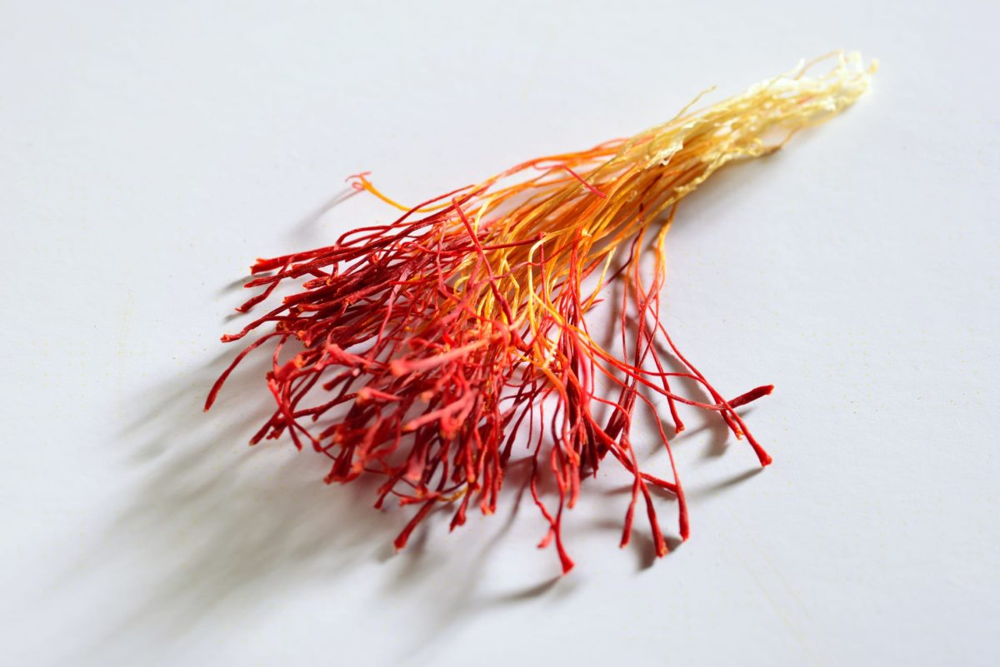
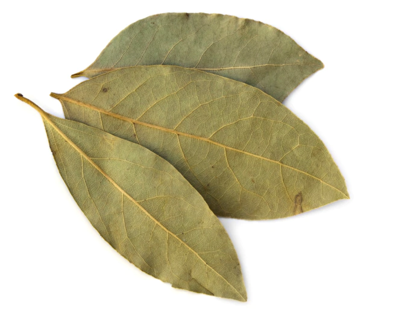
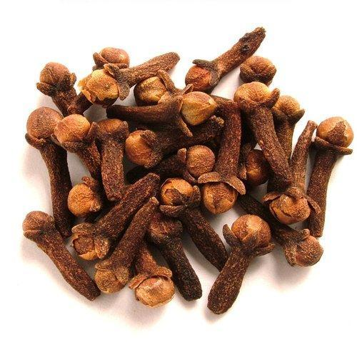
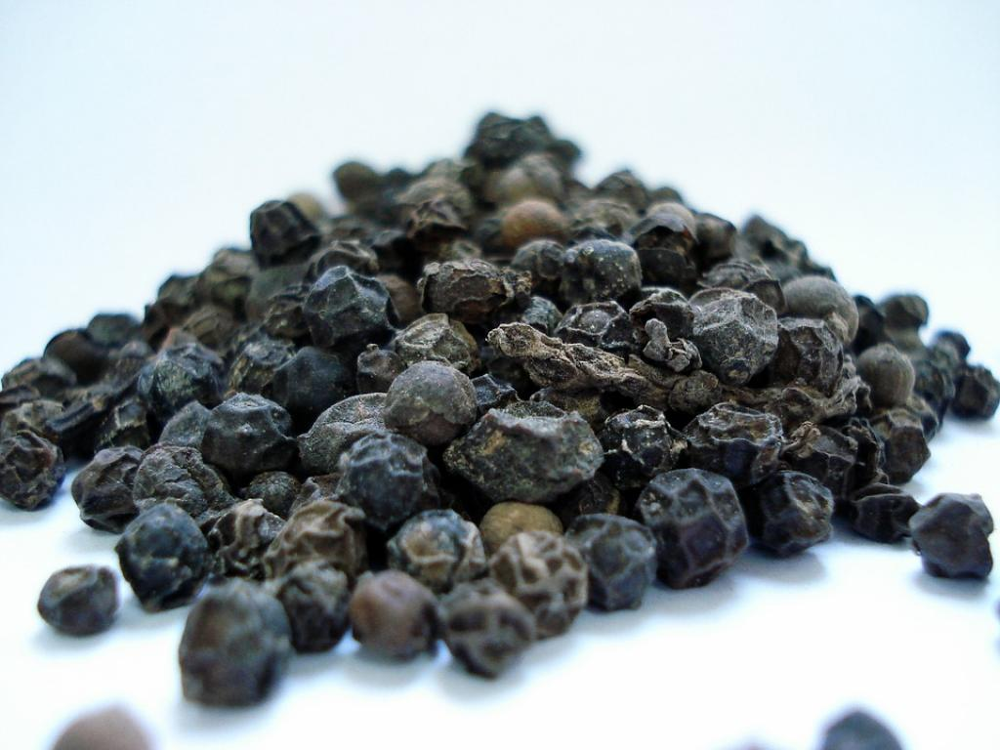
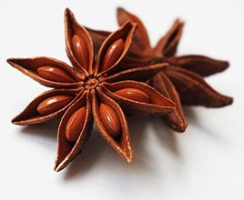

अजवाइन - Carom( कैरम )

सौंफ - Anise( अनीस )

हींग - Asafoetida( ऐसाफोटिडा )

राई - Mustard seed ( मस्टर्ड सीड )

धनिया - Coriander( कोरिएंडर )

हल्दी - Turmeric( टर्मरिक )

मिर्ची - Chilli( चिली )

इलाइची - Cardamom( कार्डेमम )

दालचीनी - Cinnamon( सिनेमन )

केसर - Saffron( सैफरन )

तेजपत्ता - Bay leaf( बे लीफ )

लौंग - Clove( क्लोव )

काली मिर्च - Pepper( पैपर )

फूल चकरी - Star Anise( स्टार अनीस )

करीपत्ता - Curry leaf( करी लीफ )